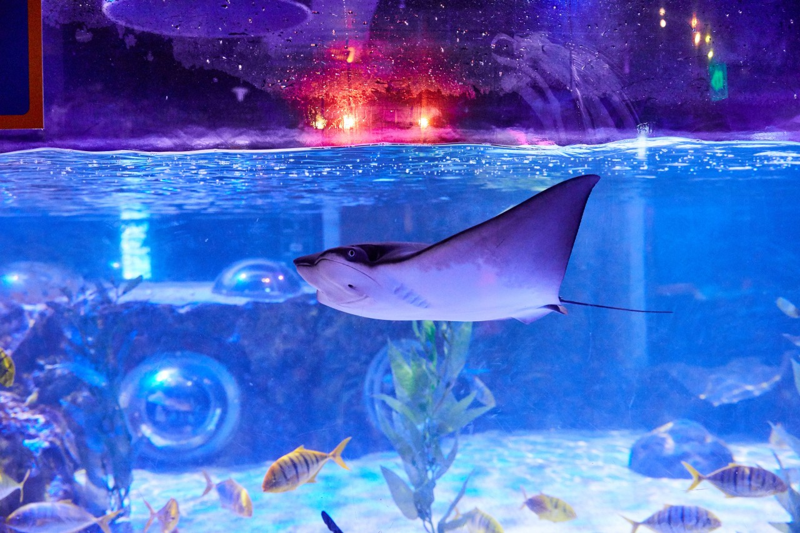
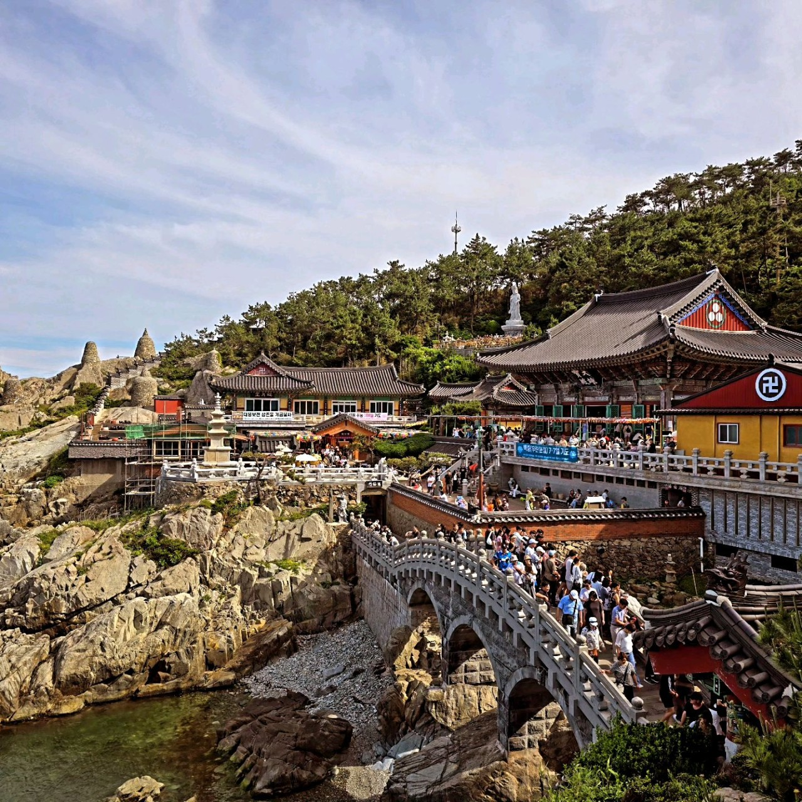

부산지역
선택
#해운대해수욕장
#광안리해수욕장
#부산 송정해수욕장
#센텀 스파랜드
#허심청
#흰여울문화마을
#송도해상케이블카
#감천문화마을어린왕자
#부산타워
#다대포 꿈의 낙조분수
#청사포다릿돌전망대
#금강공원케이블카
#전포카페거리
#광안리해수욕장
#해운대해수욕장
#곰내연밭
#일광해수욕장
#부산요트투어 요트베이
#흰여울문화마을
#감천문화마을어린왕자
#서프마린
#광안리해수욕장
#해운대해수욕장
#오륙도(섬)
#만덕고개누리길전망테크
#부산 아미르공원
#대천천 누리길
#씨라이프부산아쿠아리움
#부산 해동용궁사
#감천문화마을어린왕자
#흰여울문화마을
#해운대해수욕장
#곰내연밭
#부산요트투어 요트베이
#국립 해양박물관
#카페리프 송정해수욕장점
#유정1995 기장 본점
#스노잉클라우드
#연의양과 광안점
#코오리마찌 해운대해리단길
#고재 해운대해리단길점
#데이오프데이
#워킹홀리데이 해운대
#뱅커
#마리솔
#남천녹차팥빙수
#한잔의풀내음
#모티버
#까사부사노 테라스
#더빌리지샵
#부산국제매직페스티벌
#광안리 M(Marvelous) 드론 라이트쇼
#인터내셔널 키스포츠페스티벌 부산
#부산여행영화제
#부산국제코미디페스티벌
#페스티벌 시월
#라라라 페스티벌
#광안리어방축제
#부산가족축제
#부산바다축제
#송도달집축제
#부산세계시민축제
#영도 맥주 축제
-
.jpg)
해운대해수욕장
모래사장과 바다바람이 불어서 시원하고 드넓은 바다에 눈도 호강할 수 있다.
-
.jpg)
광안리해수욕장
아름다운 광안리 바다뷰 🌊🌅 혼자 여행하기에도 좋은 장소로 추천
-
.jpg)
송정해수욕장
송정해수욕장은 모래가 곱고 산책하기에 조용하고, 파도가 있어서 서핑도 가능!
-
.jpg)
센텀 스파랜드
찜질방 테마파크 같은 곳! 그래도 방마다 온도가 엄청 다양하게 있고, 방마다 인테리어도 달라서 보는 재미도 있습니다.
-
.jpg)
부산 허심청
채광이 좋은 돔형태 유리천장이 있는 온천! 가족과 같이 가기 좋은 곳입니다.
-
.jpg)
흰여울문화마을
흰여울문화마을은 정말 힐링하러 오기 딱 좋은 곳이에요!
-
.jpg)
부산 송도해상케이블카
탁트인 바다를 감상하며, 시원한 경치를 즐길수 있어요.
-
.jpg)
감천문화마을
정면으로는 청량한 부산의 바다, 뒤로는 조화롭게 어우러진 건물들이 마치 동화 속 마을
-
광안리해수욕장
아름다운 광안리 바다뷰 🌊🌅
혼자 여행하기에도 좋은 장소로 추천 -
.jpg)
부산 곰내연밭
연꽃 구경하기 좋은 환상적인곳!
-
.jpg)
일광해수욕장
경치도 좋고 물도 맑아서
햇살 따뜻한날 산책, 나들이 좋은 곳입니다.😊 -
.jpg)
부산요트투어 요트베이
부산 오면 꼭 요트투어 추천합니다.
-
.jpg)
오륙도(섬)
오륙도(방패섬, 솔섬, 수리섬, 송곳섬, 굴섬, 등대섬(밭섬))
인근 오륙도선착장, 오륙도스카이워크, 오륙도해맞이공원 등 구경할 수 있는 곳 -
.jpg)
만덕고개누리길전망테크
야경하기 좋은 곳!
-
.jpg)
부산 서프마린
광안리 바다 위에서 즐기는패들보드 & 서핑 체험 가능!
-
.jpg)
부산 아미르공원
-
.jpg)
대천천 누리길
-

씨라이프부산아쿠아리움
-

부산 해동용궁사
-
.jpg)
포디움다이브
-
.jpg)
감천문화마을
-
.jpg)
국립 해양박물관
-
카페리프 송정해수욕장점
카페,디저트
송정해수욕장 뷰가 한눈에 보이는 카페 -
유정1998 기장본점
카페,디저트
산속 뷰를 보며 즐기는 커피 한잔 -
스노잉클라우드
카페,디저트
애견과 함께하는 여유로운 바다뷰 카페 -
연의양과 광안점
카페,디저트
광안리라떼와 함께하는 여유로운 시간 -
코오리마찌 해운대해리단길
카페,디저트
다양한 빙수로 즐기는 특별한 여름 -
고재 해운대해리단길점
카페,디저트
한옥의 정취와 함께 즐기는 디저트 -
데이오프데이
카페,디저트
우유빙수와 함께하는 달콤한 시간
패치킹 부산점
패션잡화
-

부산국제매직페스티벌
2025.04.12.(토) ~ 2025.12.14(일)
-
광안리 M(Marvelous)드론 라이트쇼
2022.04.02.(토) ~ 2025.12.31.(수)
-

동래읍성역사축제
2025.10.24.(금) ~ 2025.10.26.(일)
-
.jpg)
인터내셔널 키스포츠페스티벌 부산
2025.07.12.(토) ~ 2025.07.13.(일)
-
.jpg)
부산여행영화제
2025.07.26.(토) ~ 2025.07.27.(일)
-
.jpg)
부산국제코미디페스티벌
2025.08.29.(금) ~ 2025.09.07.(일)
-
.jpg)
페스티벌 시월
2025.09.21.(일) ~ 2025.10.03.(금)
-
.jpg)
라라라 페스티벌
2025.10.24.(금) ~ 2025.10.26.(일)
-
.jpg)
광안리어방축제
2025.05.09.(금) ~ 2025.05.11.(일)